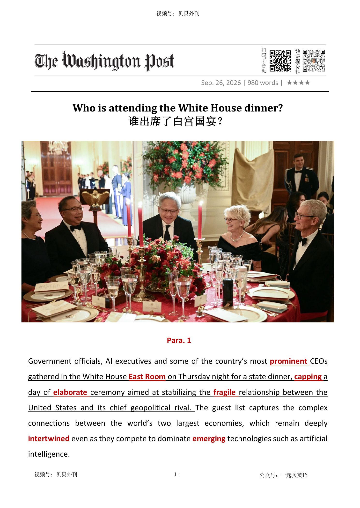

02 HEADLINE / 标题中英文解释
Who is attending the White House dinner?
谁出席了白宫国宴？

Who is attending the White House dinner?
谁出席了白宫国宴？
文章以白宫东厅的一场国宴为切入口，观察美国政府、AI 高管和大型企业 CEO 在中美关系中的复杂位置。
开头交代，这场晚宴是特朗普政府接待中方代表团的一部分，意在通过高规格仪式稳定脆弱的中美关系；但宾客名单本身就揭示了两国经济的深度交织：双方一边在人工智能等新兴技术上竞争，一边又很难真正脱钩。
随后文章转向 AI 圈内部的分歧：OpenAI 的 Sam Altman 和 Elon Musk 主张放慢 AI 发展、加强政府间监管，以避免技术失控；而白宫 AI 与加密事务负责人 David Sacks 以及英伟达 CEO 黄仁勋则淡化灾难风险，认为安全主要应由企业自行处理。
英伟达获准向中国出售部分先进 AI 芯片，也引发国家安全专家和民主党人的批评。
中段重点展示美国商界对中国的依赖：苹果仍把中国作为 iPhone 主要组装基地和重要市场，特斯拉高度依赖上海工厂和中国电动车市场，亚马逊平台上超过一半全球卖家来自中国，大量自有品牌商品也由中国制造。
随后文章讨论中美互联网壁垒：Google 早已退出中国大陆搜索市场，Meta 的 Facebook、Instagram、WhatsApp 被屏蔽，扎克伯格从早年主动示好中国转向批评 TikTok；而特朗普第二任期则推动 TikTok 美国业务剥离给美国投资者。
后半部分回到经贸谈判，财长贝森特称双方同意将去年贸易战后的协议延长两个月，但关税、中国采购、稀土供应、技术限制等核心问题并未解决，只是推迟到下一轮谈判。
结尾描写特朗普把白宫访问变成一场带有个人风格的政治秀：复古仪仗、战机轰鸣、改造成高尔夫俱乐部风格的玫瑰园，都凸显这场外交活动重排场、重形象，而实质政策成果仍相当有限。
The article is about a state dinner at the White House and what it shows about the relationship between the United States and China. Government officials, AI executives and famous CEOs attended the dinner.
The event was meant to help stabilise the fragile relationship between the two countries. But the guest list also showed how closely the two economies are connected, even while they compete in areas such as artificial intelligence.
The article first looks at the AI industry. Some leaders, such as Sam Altman and Elon Musk, think AI development should slow down and governments should work together to control the risks.
Others, such as David Sacks and Nvidia CEO Jensen Huang, believe the risks are not as serious and that companies can handle safety themselves. Nvidia wants access to the Chinese market, but some people in Washington worry that selling advanced chips to China could help China catch up in the AI race.
The article then explains why many American companies still depend on China. Apple uses China as its main iPhone assembly hub and sells millions of phones there.
Tesla relies on its Shanghai factory and on China’s huge electric-vehicle market. Amazon depends heavily on Chinese sellers and Chinese-made goods.
At the same time, China has blocked or restricted many American internet services. Google left mainland China’s search market years ago.
Meta’s Facebook, Instagram and WhatsApp are blocked. Mark Zuckerberg once tried hard to enter China, but later became a public critic of TikTok.
Trump has also pushed TikTok’s Chinese owner to spin off its U.S. operations to American investors. The trade talks brought only limited progress.
The two sides agreed to extend an earlier trade agreement by two months, but the hardest questions remain: tariffs, Chinese purchases, rare-earth supplies and technology restrictions. The ending focuses on Trump’s political performance.
The visit gave him a chance to show a Washington remade in his own image, with soldiers, music, fighter jets and a redesigned Rose Garden. The main message is that the dinner looked impressive, but the real policy results were still limited.
白宫晚宴会晤背景与AI立场分歧（Para 1-3） ├─ 会晤主旨：白宫晚宴维稳脆弱中美关系，两国经济交织且科技竞争激烈 ├─ 谨慎派阵营：奥尔特曼、马斯克主张放缓AI发展、加强国际监管 └─ 激进派阵营：黄仁勋、萨克斯淡化AI风险，英伟达积极争取中国市场 美企对华深度依存现状（Para 4-7） ├─ 苹果：依赖中国供应链与庞大消费市场，部分产能外迁但未脱离 ├─ 特斯拉：上海工厂产能优质，中国市场关键但本土竞争激烈 └─ 亚马逊：平台大量依赖中国卖家与中国制造商品 中美互联网市场壁垒与博弈（Para 8-9） ├─ 谷歌：退出中国大陆搜索市场，逐步转移硬件生产线 ├─ Meta：旗下产品遭封禁，扎克伯格态度由示好转为抨击竞品 └─ TikTok变局：美方推动剥离中资，完成美方业务拆分 经贸谈判阶段性结果（Para 10） ├─ 谈判进展：延期到期贸易协议两个月，暂缓核心争议 ├─ 履约缺口：中方大豆采购达标，农产品、稀土供应未足额兑现 └─ 后续走向：关键分歧延后，留待下一轮谈判解决 特朗普政治作秀收尾（Para 11-12） ├─ 仪式造势：改造白宫场地、复刻复古仪仗，打造个人政治风格 ├─ 刻意回避：回避政策细节提问，侧重表面外交排场 └─ 本质特点：重舆论表演，轻实质落地成果
Government officials, AI executives and some of the country’s most prominent重要的 CEOs gathered in the White House East Room白宫东厅 on Thursday night for a state dinner, capping a day of elaborate复杂的 ceremony aimed at stabilizing the fragile易碎的 relationship between the United States and its chief geopolitical rival. The guest list captures the complex connections between the world’s two largest economies, which remain deeply intertwined缠结 even as they compete to dominate emerging新兴的 technologies such as artificial intelligence.
周四晚，政府官员、人工智能行业领袖以及美国最具影响力的一批企业首席执行官齐聚白宫东厅，出席国宴。这场晚宴为一整天隆重的仪式画上句号，而这些仪式的目的就是努力稳住美国与其最重要地缘政治对手之间那段脆弱的关系。这份宾客名单本身就折射出世界两大经济体之间错综复杂的联系。尽管双方在人工智能等新兴技术领域激烈角逐，但两国经济依然深度交织。
The AI industry’s top executives attended the dinner at a moment when they’re divided over how to manage the technology’s risks, and whether they can collaborate with China to avert防止 an AI-induced引起 disaster. On one side of that divide is OpenAI chief executive Sam Altman, who has said in recent weeks that companies need to slow down development and that governments need to work together to create new oversight负责 of the technology. Both positions put him at odds with the White House. Elon Musk, the world’s richest man, a Trump ally, and founder of SpaceXAI, also attended. He has joined calls要求 by other CEOs to slow the pace of work on AI to improve safety.
人工智能行业的顶尖高管们出席此次晚宴之际，他们也正围绕一个关键问题出现明显分歧：如何应对这项技术带来的风险，以及是否应当与中国合作，以避免由其引发的灾难。争论一方的是 OpenAI 首席执行官奥特曼。近几周来，他表态，人工智能的发展速度需要放缓，各国政府也应加强合作，为这项技术建立新的监管机制。这两种主张都与白宫当前的立场存在明显分歧。当晚出席的还有世界首富、特朗普盟友、SpaceXAI 创始人马斯克。他与多位科技公司掌门人一道呼吁放慢人工智能研发步伐，以提升安全性。
On the other side of the debate is former White House AI and crypto加密货币 czar特使 David Sacks and Nvidia chief executive Jensen Huang, who have dismissed不予考虑 concerns about the potential for AI to cause a catastrophe灾难 and say that ensuring safety is a matter for AI companies to address themselves. Nvidia has pushed for access to the Chinese market and last year won permission from the administration to sell some of its advanced AI chips there. That decision drew backlash强烈抵制 from some national security experts and Democrats民主党人, who say the administration is providing China with the materials it needs to catch up追上 in the AI race.
而在争论的另一边，则是前白宫人工智能与加密货币事务主管戴维·萨克斯以及英伟达首席执行官黄仁勋。他们对人工智能可能引发灾难性后果的说法不以为意，认为确保安全主要应由人工智能企业自行负责。英伟达一直积极争取进入中国市场。去年，该公司获得政府许可，得以向中国销售部分先进人工智能芯片。这一决定引发部分国家安全专家和民主党人的强烈反对。他们认为，此举无异于向中国提供追赶美国人工智能实力所需的重要资源。
The Trump administration has aggressively sought to bring manufacturing back to the U.S. through tariffs, but many of the guests at the dinner have companies that rely on China for its factories, components组成部分 and cheaper goods.
特朗普政府一直试图通过加征关税等措施，大力推动制造业回流美国。然而，许多出席晚宴的企业高管所领导的公司，依然高度依赖中国的工厂、零部件供应以及成本更低的商品。
For Apple executive chairman Tim Cook, China represents the company’s manufacturing backbone脊梁骨 and one of its biggest markets. Though Apple has been reducing its reliance on Chinese manufacturing and has shifted parts of its supply chain to India in the face of面对 tariffs, China still remains the primary assembly装配 hub中心 for the majority of iPhones sold around the world. China is also a significant market for Apple, where it sells millions of iPhones annually.
对于苹果公司执行董事长库克而言，中国是苹果全球制造体系的核心支柱，也是其最重要的市场之一。尽管面对关税压力，苹果近年来不断降低对中国制造的依赖，并将部分供应链转移至印度，但中国仍然是全球绝大多数 iPhone 的主要组装中心。与此同时，中国也是苹果的重要消费市场，每年为其贡献数以百万计的 iPhone 销量。
In addition to his SpaceXAI venture企业, Musk is the CEO and largest shareholder of Tesla, another American company that relies heavily on China for both manufacturing and sales. In an interview ahead of the dinner, Musk praised the company’s Shanghai factory as a “gem宝石.” China is the world’s largest market and critical for the company, but it faces fierce competition from electric vehicle companies based there.
除了 SpaceXAI 之外，马斯克还是特斯拉的首席执行官和最大股东。特斯拉同样高度依赖中国，无论是在生产端还是销售端。在晚宴前的一次采访中，马斯克将特斯拉上海超级工厂称为“一颗明珠”。 中国作为全球最大的汽车市场，对特斯拉至关重要，不过，在这里，它也面临着本土电动车企业的激烈竞争。
Amazon founder Jeff Bezos’s marketplace市场竞争 heavily relies on Chinese sellers, which make up构成 more than 50 percent of the company’s global sellers (Bezos owns The Post). Many of the company’s products — including Amazon’s own private-label goods — are manufactured in China and have been subject to the administration’s tariffs.
亚马逊创始人杰夫·贝索斯的电商平台同样深深依赖中国供应链。中国卖家占亚马逊全球卖家的比例已超过一半（贝索斯同时拥有《华盛顿邮报》）。大量亚马逊商品——包括亚马逊自有品牌产品——都在中国制造，而这些商品近年来一直受到政府关税政策的影响。
China has banned or heavily restricted many of the most popular U.S. social networks and apps, including those run by two dinner attendees出席者: Google CEO Sundar Pichai and Meta CEO Mark Zuckerberg. Google launched its search engine in China in 2006, starting a years-long fight with Beijing over censorship审查. In 2010, after a series of cyberattacks网络攻击 and disputes争论 over the government’s demands to censor search results, the company pulled its search engine out of mainland China. Google now has a limited presence there, mostly selling ads to Chinese exporters. It has said it plans to move production of its Pixel phones, watches and earbuds入耳式耳机 out of China by next year.
中国长期禁止或严格限制许多美国最受欢迎的社交平台和应用程序，其中就包括两位晚宴嘉宾所掌管的产品：谷歌首席执行官桑达尔·皮查伊和 Meta 首席执行官马克·扎克伯格。谷歌于2006年进入中国市场推出搜索引擎，但随后与北京围绕网络审查问题展开长达数年的博弈。2010年，在经历一系列网络攻击以及围绕搜索结果审查要求的冲突后，谷歌最终退出中国大陆搜索市场。如今，谷歌在中国仅保留有限业务，主要向中国出口企业销售广告服务。该公司表示，计划在明年前将 Pixel 手机、智能手表和无线耳机的生产逐步迁出中国。
China also blocks Meta’s Facebook, Instagram and WhatsApp. For years, Zuckerberg worked hard to reach users in China. He proposed extensive广泛的 censorship measures, went jogging in China and delivered a 20-minute speech in Mandarin at Beijing’s Tsinghua University. That changed in 2019, as TikTok, which was then Chinese-owned, gained traction进展. Zuckerberg began publicly criticizing it, and he often raised the threat when lobbying U.S. leaders.
Meta 旗下的 Facebook、Instagram 和 WhatsApp 同样被中国封禁。多年来，扎克伯格一直努力打开中国市场的大门。他曾提出大规模内容审查方案，在中国街头晨跑，并在清华大学用普通话发表长达20分钟的演讲。然而，一切在2019年发生变化，随着当时仍是中国企业的 TikTok 于迅速崛起，扎克伯格开始公开批评TikTok，并在游说美国政府时频繁强调其带来的所谓安全威胁。
In his second term, Trump orchestrated编配 a deal to pause a ban of TikTok and have its Chinese owner spin off特朗普在第二个总统任期内主导达成了一… U.S. operations to a group of U.S. investors. Jeff Yass, a Trump donor whose investment firm holds a board seat on the new TikTok spinoff分拆公司, was on the guest list Thursday night. Executives from Google, Microsoft, Citi, Goldman Sachs, Blackstone, JPMorgan Chase, Pfizer, GE Aerospace, Exxon Mobil and LVMH were also in attendance.
特朗普在第二个总统任期内主导达成了一项协议，暂停对 TikTok 的禁令，并推动其中国母公司将美国业务剥离给美国投资方。特朗普的捐赠人杰夫·亚斯也出现在当晚宾客名单中。他旗下投资公司在新的 TikTok 分拆实体中拥有董事会席位。除此之外，谷歌、微软、花旗集团、高盛、黑石集团、摩根大通、辉瑞、通用电气航空、埃克森美孚以及路威酩轩集团的高层管理者也悉数到场。
US Treasury Secretary Scott Bessent said the two sides agreed to extend by two months a trade agreement that ended last year's trade war and was due to expire in November. But rather than locking in a durable agreement, the extension appears to push the central questions — tariffs, Chinese purchases, rare-earth supplies and technology restrictions — into the next round of negotiations. Bessent said that Beijing was meeting its requirement in the earlier agreement to buy 25 million tons of soybeans but was lagging on its pledge保证 to buy $17 billion in other agricultural goods. US officials have said rare-earth deliveries were also falling short, another sign that significant gaps remain.
美国财政部长斯科特·贝森特表示，美中双方同意将一项原定于11月到期的贸易协议再延长两个月。该协议曾终结去年那场贸易战。然而，这次延期并非为了锁定一份长期稳定的协议，而是将关税问题、中国采购承诺、稀土供应以及技术限制等核心议题，都推迟到下一轮谈判桌上解决。贝森特表示，中国已履行此前协议中采购2500万吨大豆的承诺，但在购买价值170亿美元其他农产品方面仍明显落后于目标。美国官员同时指出，稀土交付量也未达到预期。这些迹象表明，双方之间仍存在不小的分歧。
For Trump, the White House visit was an opportunity to show off卖弄 a Washington being remade in his image. After a tour around a Ming dynasty temple and a walled-off隔离的 garden retreat隐居处 (in China), the US president returned the favor with a different kind of spectacle奇观: Troops wearing wigs and tri-corner三角的 hats marched齐步走 in formation编队 and played music in a Rose Garden redesigned to look like a Trump golf club. Fighter jets and bombers roared overhead during ceremonies staged on Wednesday and Thursday, one so loud it caused Trump to flinch退缩. Speaking to reporters, Trump brushed away questions about their policy discussions.
对于特朗普而言，此次白宫接待活动也是一次展示其执政印记的机会。在中国参观了一座明代风格寺庙以及一处被围墙环绕的园林别苑之后，特朗普以一场风格不同的盛大场面回赠东道主礼遇。身着假发、头戴三角帽的士兵列队行进，在被重新设计得宛如特朗普高尔夫俱乐部的玫瑰园中奏响军乐。周三与周四的仪式期间，战斗机与轰炸机从上空呼啸而过，一次轰鸣声之大，甚至让特朗普吓一激灵。面对记者提问，特朗普刻意回避了双方政策磋商的相关问题。
重要的；著名的；杰出的
important or well known
a prominent politician杰出的政治家
Government officials, AI executives and some of the country’s most prominent CEOs gathered in the White House East Room on Thursday night for a state dinner, capping a day of elaborate ceremony aimed at stabilizing the fragile relationship between the United S…
周四晚，政府官员、人工智能行业领袖以及美国最具影响力的一批企业首席执行官齐聚白宫东厅，出席国宴。这场晚宴为一整天隆重的仪式画上句号，而这些仪式的目的就是努力稳住美国与其最重要地缘政治对手之间那段脆弱的关系。这份宾客名单本身就折射出世界两大经济体之间错综复杂的联系。尽管双方在人工智能等新兴技术领域激烈角逐，但两国经济依然深度交织。
白宫东厅（白宫内最大的礼仪大厅）
the largest ceremonial room in the White House, often used for state dinners, press events, award ceremonies, and major official gatherings
The state dinner was held in the East Room of the White House. 这场国宴在白宫东厅举行。
Government officials, AI executives and some of the country’s most prominent CEOs gathered in the White House East Room on Thursday night for a state dinner, capping a day of elaborate ceremony aimed at stabilizing the fragile relationship between the United S…
周四晚，政府官员、人工智能行业领袖以及美国最具影响力的一批企业首席执行官齐聚白宫东厅，出席国宴。这场晚宴为一整天隆重的仪式画上句号，而这些仪式的目的就是努力稳住美国与其最重要地缘政治对手之间那段脆弱的关系。这份宾客名单本身就折射出世界两大经济体之间错综复杂的联系。尽管双方在人工智能等新兴技术领域激烈角逐，但两国经济依然深度交织。
限制；设上限
1. to put a limit on something; to set a maximum amount
The government capped rent increases at 5 percent per year. 政府将租金涨幅限制在每年5%以内。
复杂的；详尽的；精心制作的
very complicated and detailed; carefully prepared and organized
elaborate designs精心的设计
Government officials, AI executives and some of the country’s most prominent CEOs gathered in the White House East Room on Thursday night for a state dinner, capping a day of elaborate ceremony aimed at stabilizing the fragile relationship between the United S…
周四晚，政府官员、人工智能行业领袖以及美国最具影响力的一批企业首席执行官齐聚白宫东厅，出席国宴。这场晚宴为一整天隆重的仪式画上句号，而这些仪式的目的就是努力稳住美国与其最重要地缘政治对手之间那段脆弱的关系。这份宾客名单本身就折射出世界两大经济体之间错综复杂的联系。尽管双方在人工智能等新兴技术领域激烈角逐，但两国经济依然深度交织。
易碎的；易损的
1. easily broken or damaged
fragile china/glass/bones易碎的瓷器╱玻璃制品╱骨骼 2. weak and uncertain; easily destroyed or spoilt不牢固的；脆弱的
Government officials, AI executives and some of the country’s most prominent CEOs gathered in the White House East Room on Thursday night for a state dinner, capping a day of elaborate ceremony aimed at stabilizing the fragile relationship between the United S…
周四晚，政府官员、人工智能行业领袖以及美国最具影响力的一批企业首席执行官齐聚白宫东厅，出席国宴。这场晚宴为一整天隆重的仪式画上句号，而这些仪式的目的就是努力稳住美国与其最重要地缘政治对手之间那段脆弱的关系。这份宾客名单本身就折射出世界两大经济体之间错综复杂的联系。尽管双方在人工智能等新兴技术领域激烈角逐，但两国经济依然深度交织。
（使）缠结，缠绕在一起
difficult to separate
a necklace of rubies intertwined with pearls缠着珍珠的红宝石项链
The guest list captures the complex connections between the world’s two largest economies, which remain deeply intertwined even as they compete to dominate emerging technologies such as artificial intelligence.
周四晚，政府官员、人工智能行业领袖以及美国最具影响力的一批企业首席执行官齐聚白宫东厅，出席国宴。这场晚宴为一整天隆重的仪式画上句号，而这些仪式的目的就是努力稳住美国与其最重要地缘政治对手之间那段脆弱的关系。这份宾客名单本身就折射出世界两大经济体之间错综复杂的联系。尽管双方在人工智能等新兴技术领域激烈角逐，但两国经济依然深度交织。
新兴的；正在发展的；崭露头角的
beginning to develop, become known, or grow in importance
The company is investing heavily in emerging technologies such as artificial intelligence and quantum computing. 这家公司正在大力投资人工智能和量子计算等新兴技术。
The guest list captures the complex connections between the world’s two largest economies, which remain deeply intertwined even as they compete to dominate emerging technologies such as artificial intelligence.
周四晚，政府官员、人工智能行业领袖以及美国最具影响力的一批企业首席执行官齐聚白宫东厅，出席国宴。这场晚宴为一整天隆重的仪式画上句号，而这些仪式的目的就是努力稳住美国与其最重要地缘政治对手之间那段脆弱的关系。这份宾客名单本身就折射出世界两大经济体之间错综复杂的联系。尽管双方在人工智能等新兴技术领域激烈角逐，但两国经济依然深度交织。
防止，避免（危险、坏事）
to prevent sth bad or dangerous from happening
A disaster was narrowly averted. 及时防止了一场灾难。
The AI industry’s top executives attended the dinner at a moment when they’re divided over how to manage the technology’s risks, and whether they can collaborate with China to avert an AI-induced disaster.
人工智能行业的顶尖高管们出席此次晚宴之际，他们也正围绕一个关键问题出现明显分歧：如何应对这项技术带来的风险，以及是否应当与中国合作，以避免由其引发的灾难。争论一方的是 OpenAI 首席执行官奥特曼。近几周来，他表态，人工智能的发展速度需要放缓，各国政府也应加强合作，为这项技术建立新的监管机制。这两种主张都与白宫当前的立场存在明显分歧。当晚出席的还有世界首富、特朗普盟友、SpaceXAI 创始人马斯克。他与多位科技公司掌门人一道呼吁放慢…
引起
To induce a state or condition means to cause it.
Doctors said surgery could induce a heart attack. 医生们说手术可能导致心脏病。
The AI industry’s top executives attended the dinner at a moment when they’re divided over how to manage the technology’s risks, and whether they can collaborate with China to avert an AI-induced disaster.
人工智能行业的顶尖高管们出席此次晚宴之际，他们也正围绕一个关键问题出现明显分歧：如何应对这项技术带来的风险，以及是否应当与中国合作，以避免由其引发的灾难。争论一方的是 OpenAI 首席执行官奥特曼。近几周来，他表态，人工智能的发展速度需要放缓，各国政府也应加强合作，为这项技术建立新的监管机制。这两种主张都与白宫当前的立场存在明显分歧。当晚出席的还有世界首富、特朗普盟友、SpaceXAI 创始人马斯克。他与多位科技公司掌门人一道呼吁放慢…
负责；照管
the state of being in charge of sb/sth
The committee has oversight of finance and general policy.委员会负责处理财政和综合政策。
On one side of that divide is OpenAI chief executive Sam Altman, who has said in recent weeks that companies need to slow down development and that governments need to work together to create new oversight of the technology.
人工智能行业的顶尖高管们出席此次晚宴之际，他们也正围绕一个关键问题出现明显分歧：如何应对这项技术带来的风险，以及是否应当与中国合作，以避免由其引发的灾难。争论一方的是 OpenAI 首席执行官奥特曼。近几周来，他表态，人工智能的发展速度需要放缓，各国政府也应加强合作，为这项技术建立新的监管机制。这两种主张都与白宫当前的立场存在明显分歧。当晚出席的还有世界首富、特朗普盟友、SpaceXAI 创始人马斯克。他与多位科技公司掌门人一道呼吁放慢…
与某人意见不合；与某人发生冲突；和某人不和
to disagree with someone or be in conflict with someone
The president is at odds with some members of his own party over trade policy. 总统在贸易政策问题上与本党部分成员意见不合。
要求；请求；呼吁
a request, an order or a demand for sb to do sth or to go somewhere
calls for the minister to resign要部长辞职的要求
He has joined calls by other CEOs to slow the pace of work on AI to improve safety.
人工智能行业的顶尖高管们出席此次晚宴之际，他们也正围绕一个关键问题出现明显分歧：如何应对这项技术带来的风险，以及是否应当与中国合作，以避免由其引发的灾难。争论一方的是 OpenAI 首席执行官奥特曼。近几周来，他表态，人工智能的发展速度需要放缓，各国政府也应加强合作，为这项技术建立新的监管机制。这两种主张都与白宫当前的立场存在明显分歧。当晚出席的还有世界首富、特朗普盟友、SpaceXAI 创始人马斯克。他与多位科技公司掌门人一道呼吁放慢…
加密货币；数字货币
short for cryptocurrency, a digital currency that uses cryptography and typically operates on a decentralized blockchain network
Many investors have increased their exposure to crypto despite market volatility. 尽管市场波动剧烈，许多投资者仍增加了对加密货币的投资。
On the other side of the debate is former White House AI and crypto czar David Sacks and Nvidia chief executive Jensen Huang, who have dismissed concerns about the potential for AI to cause a catastrophe and say that ensuring safety is a matter for AI companie…
而在争论的另一边，则是前白宫人工智能与加密货币事务主管戴维·萨克斯以及英伟达首席执行官黄仁勋。他们对人工智能可能引发灾难性后果的说法不以为意，认为确保安全主要应由人工智能企业自行负责。英伟达一直积极争取进入中国市场。去年，该公司获得政府许可，得以向中国销售部分先进人工智能芯片。这一决定引发部分国家安全专家和民主党人的强烈反对。他们认为，此举无异于向中国提供追赶美国人工智能实力所需的重要资源。
特使
particular problem that is affecting the country.
He promised to appoint an AIDS czar to deal with the disease. 他承诺任命一位艾滋病特使来对付这种疾病。
On the other side of the debate is former White House AI and crypto czar David Sacks and Nvidia chief executive Jensen Huang, who have dismissed concerns about the potential for AI to cause a catastrophe and say that ensuring safety is a matter for AI companie…
而在争论的另一边，则是前白宫人工智能与加密货币事务主管戴维·萨克斯以及英伟达首席执行官黄仁勋。他们对人工智能可能引发灾难性后果的说法不以为意，认为确保安全主要应由人工智能企业自行负责。英伟达一直积极争取进入中国市场。去年，该公司获得政府许可，得以向中国销售部分先进人工智能芯片。这一决定引发部分国家安全专家和民主党人的强烈反对。他们认为，此举无异于向中国提供追赶美国人工智能实力所需的重要资源。
不予考虑；摒弃；对…不屑一提
to decide that sb/sth is not important and not worth thinking or talking about
I think we can safely dismiss their objections.我认为我们对他们的异议完全可以不予理会。
On the other side of the debate is former White House AI and crypto czar David Sacks and Nvidia chief executive Jensen Huang, who have dismissed concerns about the potential for AI to cause a catastrophe and say that ensuring safety is a matter for AI companie…
而在争论的另一边，则是前白宫人工智能与加密货币事务主管戴维·萨克斯以及英伟达首席执行官黄仁勋。他们对人工智能可能引发灾难性后果的说法不以为意，认为确保安全主要应由人工智能企业自行负责。英伟达一直积极争取进入中国市场。去年，该公司获得政府许可，得以向中国销售部分先进人工智能芯片。这一决定引发部分国家安全专家和民主党人的强烈反对。他们认为，此举无异于向中国提供追赶美国人工智能实力所需的重要资源。
灾难；灾祸；横祸
1. a sudden event that causes many people to suffer
Early warnings of rising water levels prevented another major catastrophe.
On the other side of the debate is former White House AI and crypto czar David Sacks and Nvidia chief executive Jensen Huang, who have dismissed concerns about the potential for AI to cause a catastrophe and say that ensuring safety is a matter for AI companie…
而在争论的另一边，则是前白宫人工智能与加密货币事务主管戴维·萨克斯以及英伟达首席执行官黄仁勋。他们对人工智能可能引发灾难性后果的说法不以为意，认为确保安全主要应由人工智能企业自行负责。英伟达一直积极争取进入中国市场。去年，该公司获得政府许可，得以向中国销售部分先进人工智能芯片。这一决定引发部分国家安全专家和民主党人的强烈反对。他们认为，此举无异于向中国提供追赶美国人工智能实力所需的重要资源。
（对社会变动等的）强烈抵制，集体反对
a strong negative reaction by a large number of people, for example to sth that has recently changed in society
The government is facing an angry backlash from voters over the new tax. 政府正面临选民对新税项的强烈反对。
That decision drew backlash from some national security experts and Democrats, who say the administration is providing China with the materials it needs to catch up in the AI race.
而在争论的另一边，则是前白宫人工智能与加密货币事务主管戴维·萨克斯以及英伟达首席执行官黄仁勋。他们对人工智能可能引发灾难性后果的说法不以为意，认为确保安全主要应由人工智能企业自行负责。英伟达一直积极争取进入中国市场。去年，该公司获得政府许可，得以向中国销售部分先进人工智能芯片。这一决定引发部分国家安全专家和民主党人的强烈反对。他们认为，此举无异于向中国提供追赶美国人工智能实力所需的重要资源。
民主党人
A Democrat is a member or supporter of a particular political party which has the word "democrat" or "democratic" in its title, for example, the Democratic Party in the United States.
Murray has joined other Senate Democrats in blocking the legislation. 默里已经加入其他民主党参议员反对这项立法了。
That decision drew backlash from some national security experts and Democrats, who say the administration is providing China with the materials it needs to catch up in the AI race.
而在争论的另一边，则是前白宫人工智能与加密货币事务主管戴维·萨克斯以及英伟达首席执行官黄仁勋。他们对人工智能可能引发灾难性后果的说法不以为意，认为确保安全主要应由人工智能企业自行负责。英伟达一直积极争取进入中国市场。去年，该公司获得政府许可，得以向中国销售部分先进人工智能芯片。这一决定引发部分国家安全专家和民主党人的强烈反对。他们认为，此举无异于向中国提供追赶美国人工智能实力所需的重要资源。
(在标准、进度、水平上) 追上
To catch up with someone means to reach the same standard, stage, or level that they have reached.
Most late developers will catch up with their friends.绝大多数发育晚的人都将赶上他们的朋友们。
That decision drew backlash from some national security experts and Democrats, who say the administration is providing China with the materials it needs to catch up in the AI race.
而在争论的另一边，则是前白宫人工智能与加密货币事务主管戴维·萨克斯以及英伟达首席执行官黄仁勋。他们对人工智能可能引发灾难性后果的说法不以为意，认为确保安全主要应由人工智能企业自行负责。英伟达一直积极争取进入中国市场。去年，该公司获得政府许可，得以向中国销售部分先进人工智能芯片。这一决定引发部分国家安全专家和民主党人的强烈反对。他们认为，此举无异于向中国提供追赶美国人工智能实力所需的重要资源。
气势汹汹的；声势浩大的；志在必得的
acting with force and determination in order to succeed
an aggressive advertising campaign一场声势浩大的广告宣传活动
组成部分；成分；部件
one of several parts of which sth is made
the components of a machine机器部件
The Trump administration has aggressively sought to bring manufacturing back to the U.S. through tariffs, but many of the guests at the dinner have companies that rely on China for its factories, components and cheaper goods.
特朗普政府一直试图通过加征关税等措施，大力推动制造业回流美国。然而，许多出席晚宴的企业高管所领导的公司，依然高度依赖中国的工厂、零部件供应以及成本更低的商品。
脊梁骨；脊柱 2. the strength of character that you need to do sth difficult毅力；骨气
1. the row of small bones that are connected together down the middle of the back
He doesn't have the backbone to face the truth.他没有面对现实的勇气。
For Apple executive chairman Tim Cook, China represents the company’s manufacturing backbone and one of its biggest markets.
对于苹果公司执行董事长库克而言，中国是苹果全球制造体系的核心支柱，也是其最重要的市场之一。尽管面对关税压力，苹果近年来不断降低对中国制造的依赖，并将部分供应链转移至印度，但中国仍然是全球绝大多数 iPhone 的主要组装中心。与此同时，中国也是苹果的重要消费市场，每年为其贡献数以百万计的 iPhone 销量。
面对；尽管遭遇；在……面前
despite a difficult situation, danger, opposition, or challenge
The company continued to expand in the face of economic uncertainty. 尽管面临经济不确定性，这家公司仍继续扩张。
Though Apple has been reducing its reliance on Chinese manufacturing and has shifted parts of its supply chain to India in the face of tariffs, China still remains the primary assembly hub for the majority of iPhones sold around the world.
对于苹果公司执行董事长库克而言，中国是苹果全球制造体系的核心支柱，也是其最重要的市场之一。尽管面对关税压力，苹果近年来不断降低对中国制造的依赖，并将部分供应链转移至印度，但中国仍然是全球绝大多数 iPhone 的主要组装中心。与此同时，中国也是苹果的重要消费市场，每年为其贡献数以百万计的 iPhone 销量。
装配；组装
the process of putting together the parts of sth such as a vehicle or piece of furniture
Putting the bookcase together should be a simple assembly job.组装书橱应该是个简单的装配活。
Though Apple has been reducing its reliance on Chinese manufacturing and has shifted parts of its supply chain to India in the face of tariffs, China still remains the primary assembly hub for the majority of iPhones sold around the world.
对于苹果公司执行董事长库克而言，中国是苹果全球制造体系的核心支柱，也是其最重要的市场之一。尽管面对关税压力，苹果近年来不断降低对中国制造的依赖，并将部分供应链转移至印度，但中国仍然是全球绝大多数 iPhone 的主要组装中心。与此同时，中国也是苹果的重要消费市场，每年为其贡献数以百万计的 iPhone 销量。
（某地或活动的）中心，核心
the central and most important part of a particular place or activity
the commercial hub of the city城市的商业中心
Though Apple has been reducing its reliance on Chinese manufacturing and has shifted parts of its supply chain to India in the face of tariffs, China still remains the primary assembly hub for the majority of iPhones sold around the world.
对于苹果公司执行董事长库克而言，中国是苹果全球制造体系的核心支柱，也是其最重要的市场之一。尽管面对关税压力，苹果近年来不断降低对中国制造的依赖，并将部分供应链转移至印度，但中国仍然是全球绝大多数 iPhone 的主要组装中心。与此同时，中国也是苹果的重要消费市场，每年为其贡献数以百万计的 iPhone 销量。
（尤指有风险的）企业，商业，投机活动，经营项目
a business project or activity, especially one that involves taking risks
A disastrous business venture lost him thousands of dollars. 一个彻底失败的经营项目使他损失严重。
In addition to his SpaceXAI venture, Musk is the CEO and largest shareholder of Tesla, another American company that relies heavily on China for both manufacturing and sales.
除了 SpaceXAI 之外，马斯克还是特斯拉的首席执行官和最大股东。特斯拉同样高度依赖中国，无论是在生产端还是销售端。在晚宴前的一次采访中，马斯克将特斯拉上海超级工厂称为“一颗明珠”。 中国作为全球最大的汽车市场，对特斯拉至关重要，不过，在这里，它也面临着本土电动车企业的激烈竞争。
（经切割打磨的）宝石
1. a precious stone that has been cut and polished and is used in jewellery
a crown studded with gems镶有宝石的皇冠 2. a person, place or thing that is especially good 难能可贵的人；风景优美的地方；美妙绝伦的事物
In an interview ahead of the dinner, Musk praised the company’s Shanghai factory as a “gem.”
除了 SpaceXAI 之外，马斯克还是特斯拉的首席执行官和最大股东。特斯拉同样高度依赖中国，无论是在生产端还是销售端。在晚宴前的一次采访中，马斯克将特斯拉上海超级工厂称为“一颗明珠”。 中国作为全球最大的汽车市场，对特斯拉至关重要，不过，在这里，它也面临着本土电动车企业的激烈竞争。
市场竞争
1. the marketplace[ sing. ]the activity of competing with other companies to buy and sell goods, services, etc.
Companies must be able to survive in the marketplace.公司必须有能力在市场竞争中生存下去。
Amazon founder Jeff Bezos’s marketplace heavily relies on Chinese sellers, which make up more than 50 percent of the company’s global sellers (Bezos owns The Post).
亚马逊创始人杰夫·贝索斯的电商平台同样深深依赖中国供应链。中国卖家占亚马逊全球卖家的比例已超过一半（贝索斯同时拥有《华盛顿邮报》）。大量亚马逊商品——包括亚马逊自有品牌产品——都在中国制造，而这些商品近年来一直受到政府关税政策的影响。
自有品牌；贴牌产品；零售商自有品牌商品
a product that is manufactured by one company but sold under another company's brand name
Many supermarkets sell private-label products at lower prices than national brands. 许多超市销售价格低于知名品牌的自有品牌商品。
受……影响；受……约束；须遵守
to be affected by, governed by, or required to follow something
All imports are subject to inspection by customs officials. 所有进口商品都要接受海关官员的检查。
出席者；参加者；与会者
a person who attends a meeting, event, conference, ceremony, or other gathering
More than 1,000 attendees took part in the technology conference. 超过1000名与会者参加了这场科技大会。
China has banned or heavily restricted many of the most popular U.S. social networks and apps, including those run by two dinner attendees: Google CEO Sundar Pichai and Meta CEO Mark Zuckerberg.
中国长期禁止或严格限制许多美国最受欢迎的社交平台和应用程序，其中就包括两位晚宴嘉宾所掌管的产品：谷歌首席执行官桑达尔·皮查伊和 Meta 首席执行官马克·扎克伯格。谷歌于2006年进入中国市场推出搜索引擎，但随后与北京围绕网络审查问题展开长达数年的博弈。2010年，在经历一系列网络攻击以及围绕搜索结果审查要求的冲突后，谷歌最终退出中国大陆搜索市场。如今，谷歌在中国仅保留有限业务，主要向中国出口企业销售广告服务。该公司表示，计划在明年前将…
审查；检查；审查制度
the act or policy of censoring books, etc.
press censorship新闻审查制度
Google launched its search engine in China in 2006, starting a years-long fight with Beijing over censorship.
中国长期禁止或严格限制许多美国最受欢迎的社交平台和应用程序，其中就包括两位晚宴嘉宾所掌管的产品：谷歌首席执行官桑达尔·皮查伊和 Meta 首席执行官马克·扎克伯格。谷歌于2006年进入中国市场推出搜索引擎，但随后与北京围绕网络审查问题展开长达数年的博弈。2010年，在经历一系列网络攻击以及围绕搜索结果审查要求的冲突后，谷歌最终退出中国大陆搜索市场。如今，谷歌在中国仅保留有限业务，主要向中国出口企业销售广告服务。该公司表示，计划在明年前将…
网络攻击；网络袭击；网络攻击事件
an attempt to damage, disrupt, or gain unauthorized access to a computer system, network, or digital information
The company suffered a major cyberattack that disrupted its operations for several days. 这家公司遭受了一次严重的网络攻击，导致其业务运营中断了数日。
In 2010, after a series of cyberattacks and disputes over the government’s demands to censor search results, the company pulled its search engine out of mainland China.
中国长期禁止或严格限制许多美国最受欢迎的社交平台和应用程序，其中就包括两位晚宴嘉宾所掌管的产品：谷歌首席执行官桑达尔·皮查伊和 Meta 首席执行官马克·扎克伯格。谷歌于2006年进入中国市场推出搜索引擎，但随后与北京围绕网络审查问题展开长达数年的博弈。2010年，在经历一系列网络攻击以及围绕搜索结果审查要求的冲突后，谷歌最终退出中国大陆搜索市场。如今，谷歌在中国仅保留有限业务，主要向中国出口企业销售广告服务。该公司表示，计划在明年前将…
争论；辩论；争端；纠纷
an argument or a disagreement between two people, groups or countries; discussion about a subject where there is disagreement
a dispute between the two countries about the border两国间的边界争端
In 2010, after a series of cyberattacks and disputes over the government’s demands to censor search results, the company pulled its search engine out of mainland China.
中国长期禁止或严格限制许多美国最受欢迎的社交平台和应用程序，其中就包括两位晚宴嘉宾所掌管的产品：谷歌首席执行官桑达尔·皮查伊和 Meta 首席执行官马克·扎克伯格。谷歌于2006年进入中国市场推出搜索引擎，但随后与北京围绕网络审查问题展开长达数年的博弈。2010年，在经历一系列网络攻击以及围绕搜索结果审查要求的冲突后，谷歌最终退出中国大陆搜索市场。如今，谷歌在中国仅保留有限业务，主要向中国出口企业销售广告服务。该公司表示，计划在明年前将…
退出；撤出；退出（协议、比赛、投资等）
to withdraw from an activity, agreement, competition, investment, or situation
The company decided to pull out of the deal after negotiations broke down. 谈判破裂后，这家公司决定退出这项交易。
入耳式耳机；耳塞式耳机
small earphones that fit inside or just outside the ears
Wireless earbuds have become increasingly popular because they are small and convenient. 无线耳塞式耳机因体积小、使用方便而越来越受欢迎。
It has said it plans to move production of its Pixel phones, watches and earbuds out of China by next year.
中国长期禁止或严格限制许多美国最受欢迎的社交平台和应用程序，其中就包括两位晚宴嘉宾所掌管的产品：谷歌首席执行官桑达尔·皮查伊和 Meta 首席执行官马克·扎克伯格。谷歌于2006年进入中国市场推出搜索引擎，但随后与北京围绕网络审查问题展开长达数年的博弈。2010年，在经历一系列网络攻击以及围绕搜索结果审查要求的冲突后，谷歌最终退出中国大陆搜索市场。如今，谷歌在中国仅保留有限业务，主要向中国出口企业销售广告服务。该公司表示，计划在明年前将…
广泛的；广博的
including or dealing with a wide range of information
Extensive research has been done into this disease.对这种疾病已进行了广泛研究。
He proposed extensive censorship measures, went jogging in China and delivered a 20-minute speech in Mandarin at Beijing’s Tsinghua University.
Meta 旗下的 Facebook、Instagram 和 WhatsApp 同样被中国封禁。多年来，扎克伯格一直努力打开中国市场的大门。他曾提出大规模内容审查方案，在中国街头晨跑，并在清华大学用普通话发表长达20分钟的演讲。然而，一切在2019年发生变化，随着当时仍是中国企业的 TikTok 于迅速崛起，扎克伯格开始公开批评TikTok，并在游说美国政府时频繁强调其带来的所谓安全威胁。
慢跑
If you jog, you run slowly, often as a form of exercise.
I got up early the next morning to jog. 我次日清晨早起去慢跑了。
进展；发展势头；认可度；市场吸引力
the extent to which an idea, product, or business gains popularity, support, or acceptance
The new AI product is gaining traction among enterprise customers. 这款新的人工智能产品正在企业客户中获得越来越多的认可。
That changed in 2019, as TikTok, which was then Chinese-owned, gained traction.
Meta 旗下的 Facebook、Instagram 和 WhatsApp 同样被中国封禁。多年来，扎克伯格一直努力打开中国市场的大门。他曾提出大规模内容审查方案，在中国街头晨跑，并在清华大学用普通话发表长达20分钟的演讲。然而，一切在2019年发生变化，随着当时仍是中国企业的 TikTok 于迅速崛起，扎克伯格开始公开批评TikTok，并在游说美国政府时频繁强调其带来的所谓安全威胁。
游说（从政者或政府）
to try to influence a politician or the government and, for example, persuade them to support or oppose a change in the law
Farmers will lobby Congress for higher subsidies.农民将游说国会提高对农业的补贴。
编配（或创作管弦乐曲） 2. to organize a complicated plan or event very carefully or secretly精心安排；策划；密谋
1. to arrange a piece of music in parts so that it can be played by an orchestra
a carefully orchestrated publicity campaign精心策划的一场宣传运动
In his second term, Trump orchestrated a deal to pause a ban of TikTok and have its Chinese owner spin off U.S. operations to a group of U.S. investors.
特朗普在第二个总统任期内主导达成了一项协议，暂停对 TikTok 的禁令，并推动其中国母公司将美国业务剥离给美国投资方。特朗普的捐赠人杰夫·亚斯也出现在当晚宾客名单中。他旗下投资公司在新的 TikTok 分拆实体中拥有董事会席位。除此之外，谷歌、微软、花旗集团、高盛、黑石集团、摩根大通、辉瑞、通用电气航空、埃克森美孚以及路威酩轩集团的高层管理者也悉数到场。
特朗普在第二个总统任期内主导达成了一项协议，暂停对 TikTok
To spin off something such as a company means to create a new company that is separate from the
He rescued the company and later spun off its textile division into a separate entity. 他挽救了该公司，后来又把它的纺织部脱离出来组建成一个独立实体。
In his second term, Trump orchestrated a deal to pause a ban of TikTok and have its Chinese owner spin off U.S. operations to a group of U.S. investors.
特朗普在第二个总统任期内主导达成了一项协议，暂停对 TikTok 的禁令，并推动其中国母公司将美国业务剥离给美国投资方。特朗普的捐赠人杰夫·亚斯也出现在当晚宾客名单中。他旗下投资公司在新的 TikTok 分拆实体中拥有董事会席位。除此之外，谷歌、微软、花旗集团、高盛、黑石集团、摩根大通、辉瑞、通用电气航空、埃克森美孚以及路威酩轩集团的高层管理者也悉数到场。
分拆公司；衍生公司；衍生产品；衍生事物
a new company, product, or organization created from an existing one; something that develops from a larger project or idea
The tech giant plans to turn its AI division into a separate spinoff. 这家科技巨头计划将其人工智能部门拆分为一家独立公司。
Jeff Yass, a Trump donor whose investment firm holds a board seat on the new TikTok spinoff, was on the guest list Thursday night.
特朗普在第二个总统任期内主导达成了一项协议，暂停对 TikTok 的禁令，并推动其中国母公司将美国业务剥离给美国投资方。特朗普的捐赠人杰夫·亚斯也出现在当晚宾客名单中。他旗下投资公司在新的 TikTok 分拆实体中拥有董事会席位。除此之外，谷歌、微软、花旗集团、高盛、黑石集团、摩根大通、辉瑞、通用电气航空、埃克森美孚以及路威酩轩集团的高层管理者也悉数到场。
锁定；确定；敲定；锁定（某种选择、价格、条件等）
to secure or fix something so that it cannot easily be changed; to commit to something
The company locked in a long-term supply agreement to secure stable access to rare earth materials. 这家公司敲定了一份长期供应协议，以确保稳定获得稀土材料。
缓慢移动；发展缓慢；滞后；落后于
to move or develop slowly or more slowly than other people, organizations, etc.
The little boy lagged behind his parents.那小男孩落在了父母的后面。
保证；诺言；誓约
a serious promise
a pledge of support支援的许诺
Bessent said that Beijing was meeting its requirement in the earlier agreement to buy 25 million tons of soybeans but was lagging on its pledge to buy $17 billion in other agricultural goods.
美国财政部长斯科特·贝森特表示，美中双方同意将一项原定于11月到期的贸易协议再延长两个月。该协议曾终结去年那场贸易战。然而，这次延期并非为了锁定一份长期稳定的协议，而是将关税问题、中国采购承诺、稀土供应以及技术限制等核心议题，都推迟到下一轮谈判桌上解决。贝森特表示，中国已履行此前协议中采购2500万吨大豆的承诺，但在购买价值170亿美元其他农产品方面仍明显落后于目标。美国官员同时指出，稀土交付量也未达到预期。这些迹象表明，双方之间仍存在…
未达到；未能实现；不符合；不足
to fail to reach a required standard, goal, or expectation
The company's latest product fell short of investors' expectations. 这家公司最新推出的产品未达到投资者的预期。
卖弄; 炫耀
If you say that someone is showing off, you are criticizing them for trying to impress people by showing in a very obvious way what they can do or what they own.
All right, there's no need to show off. 好啦，没有必要炫耀了。
For Trump, the White House visit was an opportunity to show off a Washington being remade in his image.
对于特朗普而言，此次白宫接待活动也是一次展示其执政印记的机会。在中国参观了一座明代风格寺庙以及一处被围墙环绕的园林别苑之后，特朗普以一场风格不同的盛大场面回赠东道主礼遇。身着假发、头戴三角帽的士兵列队行进，在被重新设计得宛如特朗普高尔夫俱乐部的玫瑰园中奏响军乐。周三与周四的仪式期间，战斗机与轰炸机从上空呼啸而过，一次轰鸣声之大，甚至让特朗普吓一激灵。面对记者提问，特朗普刻意回避了双方政策磋商的相关问题。
隔离的；与外界隔绝的；封闭的
separated or isolated from something by a wall or other barrier; kept completely separate
The hospital has a walled-off section for patients with highly contagious diseases. 医院设有一个与其他区域隔离的区域，用于收治传染性很强的疾病患者。
After a tour around a Ming dynasty temple and a walled-off garden retreat (in China), the US president returned the favor with a different kind of spectacle: Troops wearing wigs and tri-corner hats marched in formation and played music in a Rose Garden redesig…
对于特朗普而言，此次白宫接待活动也是一次展示其执政印记的机会。在中国参观了一座明代风格寺庙以及一处被围墙环绕的园林别苑之后，特朗普以一场风格不同的盛大场面回赠东道主礼遇。身着假发、头戴三角帽的士兵列队行进，在被重新设计得宛如特朗普高尔夫俱乐部的玫瑰园中奏响军乐。周三与周四的仪式期间，战斗机与轰炸机从上空呼啸而过，一次轰鸣声之大，甚至让特朗普吓一激灵。面对记者提问，特朗普刻意回避了双方政策磋商的相关问题。
隐居处; 休养处
A retreat is a quiet, isolated place that you go to in order to rest or to do things in private.
He spent yesterday hidden away in his country retreat. 他躲在乡间的休养地度过了昨天。
After a tour around a Ming dynasty temple and a walled-off garden retreat (in China), the US president returned the favor with a different kind of spectacle: Troops wearing wigs and tri-corner hats marched in formation and played music in a Rose Garden redesig…
对于特朗普而言，此次白宫接待活动也是一次展示其执政印记的机会。在中国参观了一座明代风格寺庙以及一处被围墙环绕的园林别苑之后，特朗普以一场风格不同的盛大场面回赠东道主礼遇。身着假发、头戴三角帽的士兵列队行进，在被重新设计得宛如特朗普高尔夫俱乐部的玫瑰园中奏响军乐。周三与周四的仪式期间，战斗机与轰炸机从上空呼啸而过，一次轰鸣声之大，甚至让特朗普吓一激灵。面对记者提问，特朗普刻意回避了双方政策磋商的相关问题。
回报人情；投桃报李；回报好意
to do something kind or helpful for someone who has done something kind or helpful for you
She helped me prepare for the interview, so I offered to return the favor when she needed help. 她帮我准备面试，所以当她需要帮助时，我主动提出回报她的好意。
奇观
1. A spectacle is a strange or interesting sight.
It was a spectacle not to be missed.
After a tour around a Ming dynasty temple and a walled-off garden retreat (in China), the US president returned the favor with a different kind of spectacle: Troops wearing wigs and tri-corner hats marched in formation and played music in a Rose Garden redesig…
对于特朗普而言，此次白宫接待活动也是一次展示其执政印记的机会。在中国参观了一座明代风格寺庙以及一处被围墙环绕的园林别苑之后，特朗普以一场风格不同的盛大场面回赠东道主礼遇。身着假发、头戴三角帽的士兵列队行进，在被重新设计得宛如特朗普高尔夫俱乐部的玫瑰园中奏响军乐。周三与周四的仪式期间，战斗机与轰炸机从上空呼啸而过，一次轰鸣声之大，甚至让特朗普吓一激灵。面对记者提问，特朗普刻意回避了双方政策磋商的相关问题。
假发
a covering made from artificial or natural hair that is worn on the head
She wore a wig for the role in the movie. 她在电影中饰演这个角色时戴了一顶假发。
三角的；三角帽式的
having three corners; describing a traditional hat with three raised or folded sides
The president wore a traditional tri-corner hat at the historical ceremony. 总统在这场历史纪念仪式上戴了一顶传统的三角帽。
After a tour around a Ming dynasty temple and a walled-off garden retreat (in China), the US president returned the favor with a different kind of spectacle: Troops wearing wigs and tri-corner hats marched in formation and played music in a Rose Garden redesig…
对于特朗普而言，此次白宫接待活动也是一次展示其执政印记的机会。在中国参观了一座明代风格寺庙以及一处被围墙环绕的园林别苑之后，特朗普以一场风格不同的盛大场面回赠东道主礼遇。身着假发、头戴三角帽的士兵列队行进，在被重新设计得宛如特朗普高尔夫俱乐部的玫瑰园中奏响军乐。周三与周四的仪式期间，战斗机与轰炸机从上空呼啸而过，一次轰鸣声之大，甚至让特朗普吓一激灵。面对记者提问，特朗普刻意回避了双方政策磋商的相关问题。
齐步走；行进
to walk with stiff regular steps like a soldier
Soldiers were marching up and down outside the government buildings. 士兵在政府大楼外面来回练习队列行进。
After a tour around a Ming dynasty temple and a walled-off garden retreat (in China), the US president returned the favor with a different kind of spectacle: Troops wearing wigs and tri-corner hats marched in formation and played music in a Rose Garden redesig…
对于特朗普而言，此次白宫接待活动也是一次展示其执政印记的机会。在中国参观了一座明代风格寺庙以及一处被围墙环绕的园林别苑之后，特朗普以一场风格不同的盛大场面回赠东道主礼遇。身着假发、头戴三角帽的士兵列队行进，在被重新设计得宛如特朗普高尔夫俱乐部的玫瑰园中奏响军乐。周三与周四的仪式期间，战斗机与轰炸机从上空呼啸而过，一次轰鸣声之大，甚至让特朗普吓一激灵。面对记者提问，特朗普刻意回避了双方政策磋商的相关问题。
编队；队形
a particular arrangement or pattern
aircraft flying in formation 编队飞行的飞机
After a tour around a Ming dynasty temple and a walled-off garden retreat (in China), the US president returned the favor with a different kind of spectacle: Troops wearing wigs and tri-corner hats marched in formation and played music in a Rose Garden redesig…
对于特朗普而言，此次白宫接待活动也是一次展示其执政印记的机会。在中国参观了一座明代风格寺庙以及一处被围墙环绕的园林别苑之后，特朗普以一场风格不同的盛大场面回赠东道主礼遇。身着假发、头戴三角帽的士兵列队行进，在被重新设计得宛如特朗普高尔夫俱乐部的玫瑰园中奏响军乐。周三与周四的仪式期间，战斗机与轰炸机从上空呼啸而过，一次轰鸣声之大，甚至让特朗普吓一激灵。面对记者提问，特朗普刻意回避了双方政策磋商的相关问题。
（突然）退缩；畏缩
to make a sudden movement with your face or body as a result of pain, fear, surprise, etc.
He flinched at the sight of the blood.他一见到血就往后退。
Fighter jets and bombers roared overhead during ceremonies staged on Wednesday and Thursday, one so loud it caused Trump to flinch.
对于特朗普而言，此次白宫接待活动也是一次展示其执政印记的机会。在中国参观了一座明代风格寺庙以及一处被围墙环绕的园林别苑之后，特朗普以一场风格不同的盛大场面回赠东道主礼遇。身着假发、头戴三角帽的士兵列队行进，在被重新设计得宛如特朗普高尔夫俱乐部的玫瑰园中奏响军乐。周三与周四的仪式期间，战斗机与轰炸机从上空呼啸而过，一次轰鸣声之大，甚至让特朗普吓一激灵。面对记者提问，特朗普刻意回避了双方政策磋商的相关问题。
轻描淡写地忽视；不予理会；把……抛在一边
to dismiss or ignore something as unimportant, especially a concern, criticism, or problem
The CEO brushed away concerns about the company's declining sales. 首席执行官对公司销售额下滑的担忧不予理会。
构成
The people or things that make up something are the members or parts that form that thing.
The Chinese make up the largest single ethnic group in the city's public classrooms. 华人在该市公立学校的课堂中构成最大的一个族群。
Amazon founder Jeff Bezos’s marketplace heavily relies on Chinese sellers, which make up more than 50 percent of the company’s global sellers (Bezos owns The Post).
亚马逊创始人杰夫·贝索斯的电商平台同样深深依赖中国供应链。中国卖家占亚马逊全球卖家的比例已超过一半（贝索斯同时拥有《华盛顿邮报》）。大量亚马逊商品——包括亚马逊自有品牌产品——都在中国制造，而这些商品近年来一直受到政府关税政策的影响。
易碎的瓷器╱玻璃制品╱骨骼 2. weak and uncertain; easily destroyed or spoilt不牢固的；脆弱的
bones
a fragile alliance/ceasefire/relationship 不牢固的联盟；不确定的停火╱关系
Government officials, AI executives and some of the country’s most prominent CEOs gathered in the White House East Room on Thursday night for a state dinner, capping a day of elaborate ceremony aimed at stabilizing the fragile relationship between the United States and its chief geopolitical rival.
1. 句子主干（主句） Government officials, AI executives and some of the country’s most prominent CEOs gathered 主语：Government officials, AI executives and some of the country’s most prominent CEOs（三个并列名词短语作 主语） 谓语：gathered（不及物动词，一般过去时；没有宾语，gather 此处表 “聚集、齐聚”） 主句的状语（修饰谓语 gathered，交代地点、时间、目的）
a. in the White House East Room 地点状语 b. on Thursday night 时间状语 c. for a state dinner 目的状语，表 “为出席国宴” 主句翻译：政府官员、人工智能行业高管以及美国一众顶尖企业首席执行官，于周四晚间齐聚白宫东厅出席 国宴。
2. 现在分词作结果状语：capping a day of elaborate ceremony capping 是 cap 的现在分词，作全句的结果状语 cap 动词义：使… 圆满结束；为… 画上句号 逻辑主语 = 主句主语（前面这群人齐聚东厅这件事，完成 / 收尾了一整天仪式） 核心：现在分词放在主句逗号后，描述前面整件事带来的结果。
3. 后置定语：aimed at stabilizing the fragile relationship… aimed at… 是过去分词短语，修饰前面名词短语 a day of elaborate ceremony 还原定语从句：a day of elaborate ceremony which was aimed at stabilizing the fragile relationship… be aimed at sth / doing sth：旨在、目的在于 stabilizing：动名词，作介词 at 的宾语
4. 介词短语后置定语（修饰 relationship） between the United States and its chief geopolitical rival 介词短语修饰 relationship，表示 “美与其首要地缘战略对手之间的（关系）”
After a tour around a Ming dynasty temple and a walled-off garden retreat (in China), the US president returned the favor with a different kind of spectacle: Troops wearing wigs and tri-corner hats marched in formation and played music in a Rose Garden redesigned to look like a Trump golf club.
1. 句首：介词短语作时间状语 After a tour around a Ming dynasty temple and a walled-off garden retreat (in China) 介词：After 介词宾语：a tour around …retreat 介词短语后置修饰 tour，说明参观的对象 并列宾语：a Ming dynasty temple 和 a walled-off garden retreat 地点状语：in China 含义：在中国参观完一座明代风格庙宇与一处带围墙的园林别院之后
2. 主句：the US president returned the favor with a different kind of spectacle 主语：the US president 谓语：returned（一般过去时，及物动词） 宾语：the favor 方式状语：with a different kind of spectacle（以另一番盛大场面） return the favor 固定习语：投桃报李、予以回礼
3. 冒号：解释说明 spectacle（盛大场面） 冒号后面是一个独立分句，用来具体描述这场 spectacle 是什么： Troops wearing wigs and tri-corner hats marched in formation and played music in a Rose Garden redesigned to look like a Trump golf club. 主语：Troops 后置定语：wearing wigs and tri-corner hats 现在分词短语作后置定语，修饰 troops；= Troops who wore wigs and tri-corner hats 译：戴着假发、头戴三角帽的士兵
谓语是并列谓语：
a. marched in formation 列队行进 b. played music 演奏乐曲 in formation 介词短语作状语，修饰 marched（列队）
地点状语：in a Rose Garden redesigned to look like a Trump golf club 过去分词短语作后置定语，修饰 Rose Garden 还原定语从句：a Rose Garden that had been redesigned to look like a Trump golf club 不定式 to look like… 作目的状语，修饰 redesigned，表 “重新设计用来模仿特朗普高尔夫俱乐部风格”